pacman::p_load(
pacman, tidyverse, readxl, patchwork, ggthemes, scales,
ggdist, DescTools, ggpubr, ggstatsplot, forcats
)Take-Home Exercise 01
Overview
This report investigates the drivers of income inequality and socio-economic mobility among rural informal labourers in Northern Vietnam. Using tidyverse for sophisticated data wrangling and ggplot2 for high-dimensional visual analytics, the study progresses from structural disparities to the psychological drivers of economic transition.
Macro Context & Distribution: Mapping regional demographics and the concentration of income across quintiles to establish a baseline of inequality.
Structural Gaps: Examining how ethnicity and gender intersect with livelihood strategies to create systemic earning gaps.
Micro-Level Productivity Drivers: Quantifying the marginal returns of education, vocational training, and technology access on daily wage efficiency.
Social Outlook & Aspiration: Synthesizing material living conditions (housing) with policy perceptions to identify the “Aspiration Awakening”—the link between asset stability and the desire for economic transition.
1 Getting Started
1.1 Installing and loading the packages
| Library | Description |
|---|---|
| pacman | A package management utility used to install and load multiple R packages efficiently with a single command. |
| tidyverse | A collection of core R packages for data science workflows (data cleaning, transformation, and visualization). |
| readxl | Enables importing Excel files (.xls, .xlsx) into R without requiring external dependencies. |
| patchwork | Provides an intuitive syntax for combining multiple ggplot2 objects into a unified multi-panel layout. |
| ggthemes | Supplies additional themes and styling options for ggplot2 to improve visual aesthetics and consistency. |
| scales | Offers scale functions and formatting utilities for axes, legends, and labels in ggplot2 (e.g., percentages, commas). |
| ggdist | Extends ggplot2 for visualising distributions and uncertainty (e.g., half-violin / raincloud plots). |
| DescTools | Provides descriptive statistics tools, including inequality measures such as the Gini coefficient. |
| ggpubr | Adds publication-ready ggplot2 helpers, including statistical annotation layers and plot arrangement utilities. |
| ggstatsplot | Integrates hypothesis tests directly into ggplot2 visualizations with transparent reporting of results. |
| ggplot2 | The foundational grammar-of-graphics package used for building statistical visualizations. |
| dplyr | A core tidyverse package for data manipulation (filtering, grouping, summarizing). |
| forcats | A tidyverse package for working with categorical variables (factors), including reordering and explicit NA handling. |
1.2 Analytical Framework
This section outlines the end-to-end research pipeline developed for this study. The workflow integrates systematic data wrangling, advanced feature engineering—such as the derivation of the Daily Wage and Aspiration Index—and multidimensional visual analytics.
Code
flowchart TB
%% ==========================================
%% 1. Professional Style Definitions
%% ==========================================
classDef data fill:none,stroke:#8e9aaf,stroke-width:1.5px,color:#333333;
classDef proc fill:none,stroke:#8e9aaf,stroke-width:1.5px,color:#333333;
classDef feat fill:none,stroke:#547d9d,stroke-width:2.5px,color:#547d9d;
classDef out fill:none,stroke:#547d9d,stroke-width:2.5px,color:#547d9d;
%% ==========================================
%% 2. Data Pipeline Logic
%% ==========================================
A["Raw survey dataset<br/>725 obs × 30 vars"]:::data
--> B["Import Excel<br/>read_excel()"]:::data
%% --- Subgraph 1: Processing (Invisible) ---
subgraph S1 [" "]
direction LR
B --> C["Data Selection<br/>& Audit"]:::proc
C --> D["Data Wrangling<br/>& Recoding"]:::proc
end
%% --- Subgraph 2: Features (Invisible) ---
subgraph S2 [" "]
direction LR
D --> J["Daily Wage<br/>(Productivity)"]:::feat
D --> K["Income Shares<br/>(Composition)"]:::feat
D --> L["Aspiration Index<br/>(Social Outlook)"]:::feat
end
%% --- Subgraph 3: Analysis (Invisible) ---
subgraph S3 [" "]
direction TB
J --> M["2.1 Macro context"]:::out
K --> N["2.2 Inequality"]:::out
J --> O["2.3 Structural gaps"]:::out
K --> P["2.4 Composition"]:::out
J --> Q["2.5 Micro drivers"]:::out
L --> R["2.6 Social outlook"]:::out
end
%%
M & N & O & P & Q & R --> Z["Synthesis & Conclusion<br/>(Strategic Recommendations)"]:::out
%% ==========================================
%% 3. Hide Subgraph Borders & Backgrounds
%% ==========================================
style S1 fill:none,stroke:none
style S2 fill:none,stroke:none
style S3 fill:none,stroke:noneflowchart TB %% ========================================== %% 1. Professional Style Definitions %% ========================================== classDef data fill:none,stroke:#8e9aaf,stroke-width:1.5px,color:#333333; classDef proc fill:none,stroke:#8e9aaf,stroke-width:1.5px,color:#333333; classDef feat fill:none,stroke:#547d9d,stroke-width:2.5px,color:#547d9d; classDef out fill:none,stroke:#547d9d,stroke-width:2.5px,color:#547d9d; %% ========================================== %% 2. Data Pipeline Logic %% ========================================== A["Raw survey dataset<br/>725 obs × 30 vars"]:::data --> B["Import Excel<br/>read_excel()"]:::data %% --- Subgraph 1: Processing (Invisible) --- subgraph S1 [" "] direction LR B --> C["Data Selection<br/>& Audit"]:::proc C --> D["Data Wrangling<br/>& Recoding"]:::proc end %% --- Subgraph 2: Features (Invisible) --- subgraph S2 [" "] direction LR D --> J["Daily Wage<br/>(Productivity)"]:::feat D --> K["Income Shares<br/>(Composition)"]:::feat D --> L["Aspiration Index<br/>(Social Outlook)"]:::feat end %% --- Subgraph 3: Analysis (Invisible) --- subgraph S3 [" "] direction TB J --> M["2.1 Macro context"]:::out K --> N["2.2 Inequality"]:::out J --> O["2.3 Structural gaps"]:::out K --> P["2.4 Composition"]:::out J --> Q["2.5 Micro drivers"]:::out L --> R["2.6 Social outlook"]:::out end %% M & N & O & P & Q & R --> Z["Synthesis & Conclusion<br/>(Strategic Recommendations)"]:::out %% ========================================== %% 3. Hide Subgraph Borders & Backgrounds %% ========================================== style S1 fill:none,stroke:none style S2 fill:none,stroke:none style S3 fill:none,stroke:none
1.3 Data Import
The dataset used in this study is derived from a socio-economic survey of 725 informal labourers across five provinces in the Northern Mountainous Region of Vietnam. The data consists of 725 observations and 30 variables, categorized into six key dimensions: Characteristics (C), Income Types (T), Impact Factors (F), Living Conditions (L), Policy Opinions (P), and Social Assessments (A).
raw_df <- read_excel("data/Upload for elsiver.xlsx",
sheet = 1,
na = c("", "NA"))1.4 Filtering data for selected variables
To ensure a focused analysis, a subset of variables was extracted from the raw dataset, covering six critical socio-economic dimensions:
Demographics (CPRO, CGEN, CRAC): Capturing province, gender, and ethnicity to identify structural grouping.
Income Profiles (TEIN, TAIN, TSII, TOIN): Identifying total income and its breakdown across agriculture, service, and other sectors.
Human Capital & Credit (FEDU, FVTP, FCRA, FTAP): Measuring education, vocational training, credit access, and technology adoption.
Labor Supply (LWDA): Recording working days to calculate daily wage efficiency.
Policy & Wellbeing (PPO, ARO4): Assessing respondent perceptions of rural development policies and self-reported wellbeing improvements.
Living Conditions (LHO): Using housing characteristics as a proxy for material asset stability.
selected_df <- raw_df %>%
select(
CPRO, CGEN, CRAC, CJOB, CQUI,
TEIN, TAIN, TSII, TOIN,
FEDU, FVTP, FCRA, FTAP,
LWDA,
starts_with("PPO"),
ARO4,
starts_with("LHO")
)1.5 Data Preprocessing
1.5.1 Checking Duplicate Rows
Using the duplicated() function to see whether there are duplicate entries in the data.
raw_dup <- raw_df[duplicated(raw_df), ]
raw_dup# A tibble: 2 × 30
CPRO CGEN CRAC CJOB CQUI TEIN TAIN TSII TOIN FEDU FVTP FCRA FTAP
<dbl> <chr> <dbl> <dbl> <dbl> <dbl> <dbl> <dbl> <dbl> <dbl> <dbl> <dbl> <dbl>
1 3 1 2 1 4 26 26 0 0 0 1 1 1
2 5 1 1 1 5 18 7 11 0 0 1 1 1
# ℹ 17 more variables: LHO1 <dbl>, LHO2 <dbl>, LHO3 <dbl>, LHO4 <dbl>,
# LCRE <dbl>, LSAV <dbl>, LWDA <dbl>, PPO1 <dbl>, PPO2 <dbl>, PPO3 <dbl>,
# PPO4 <dbl>, PPO5 <dbl>, ARO1 <dbl>, ARO2 <dbl>, ARO3 <dbl>, ARO4 <chr>,
# ARO5 <dbl>sel_dup <- selected_df[duplicated(selected_df), ]
sel_dup# A tibble: 5 × 24
CPRO CGEN CRAC CJOB CQUI TEIN TAIN TSII TOIN FEDU FVTP FCRA FTAP
<dbl> <chr> <dbl> <dbl> <dbl> <dbl> <dbl> <dbl> <dbl> <dbl> <dbl> <dbl> <dbl>
1 3 1 2 1 5 24 24 0 0 0 1 1 1
2 3 1 2 1 5 22 22 0 0 0 1 1 1
3 3 1 2 1 5 22 22 0 0 0 1 1 1
4 3 1 2 1 4 26 26 0 0 0 1 1 1
5 5 1 1 1 5 18 7 11 0 0 1 1 1
# ℹ 11 more variables: LWDA <dbl>, PPO1 <dbl>, PPO2 <dbl>, PPO3 <dbl>,
# PPO4 <dbl>, PPO5 <dbl>, ARO4 <chr>, LHO1 <dbl>, LHO2 <dbl>, LHO3 <dbl>,
# LHO4 <dbl>
Note
Interpretation of duplicates
We checked duplicates at two levels:
raw_df: duplicates here indicate exactly repeated records across all variables (data-entry duplication).selected_df: duplicates here may arise because, after selecting a subset of variables, multiple respondents can share identical profiles on the selected features (projection duplicates).
Since this is a survey dataset without respondent IDs, and projection duplicates can legitimately reflect homogeneous socio-economic profiles in the target population, we retain all records to avoid artificially altering the sample distribution.
1.5.2 Checking Missing Value
na_summary <- selected_df %>%
summarise(across(everything(), ~sum(is.na(.)))) %>%
pivot_longer(everything(),
names_to = "variable",
values_to = "na_count") %>%
arrange(desc(na_count))
na_summary# A tibble: 24 × 2
variable na_count
<chr> <int>
1 LHO4 653
2 LHO3 616
3 LHO1 512
4 LHO2 402
5 PPO2 230
6 PPO1 209
7 LWDA 160
8 ARO4 111
9 PPO5 106
10 FTAP 102
# ℹ 14 more rows1.5.3 Renaming Columns and Transforming Feature
For categorical grouping variables, missing values are retained as an explicit category (“Unknown”) to preserve the full income distribution and avoid unnecessary sample loss.
Code
clean_df <- selected_df %>%
# 1) Listwise deletion on core income metric
filter(!is.na(TEIN)) %>%
# 2) Rename columns first (more readable downstream)
rename(
total_income = TEIN,
agri_income = TAIN,
service_industry_inc = TSII,
other_income = TOIN,
working_days = LWDA,
policy_training = PPO1,
policy_agri_chain = PPO2,
policy_healthcare = PPO3,
policy_elderly_care = PPO4,
policy_urban_jobs = PPO5,
wellbeing_improve = ARO4,
house_cottage = LHO1,
house_roofed = LHO2,
house_solid = LHO3,
house_buildings = LHO4
) %>%
# 3) Binary indicators: NA -> 0
mutate(across(starts_with("house_"),
~replace_na(as.numeric(.), 0))) %>%
# 4) PPO series: NA -> "Not Answered"
mutate(across(starts_with("policy_"),
~replace_na(as.character(.), "Not Answered"))) %>%
# 5) Recode coded variables into factors (and explicitly keep missing as "Unknown")
mutate(
province = factor(CPRO, levels = 1:5,
labels = c("Tuyen Quang", "Quang Ninh", "Ha Giang", "Yen Bai", "Bac Giang")),
gender = factor(CGEN, levels = c(1, 2),
labels = c("Male", "Female")) |>
forcats::fct_explicit_na("Unknown"),
race = factor(CRAC, levels = c(1, 2),
labels = c("Kinh", "Minority")) |>
forcats::fct_explicit_na("Unknown"),
job_type = factor(CJOB, levels = c(1, 2, 3),
labels = c("Agricultural", "Service/Industrial", "Other")) |>
forcats::fct_explicit_na("Unknown"),
# Keep income group order from lowest -> top (useful for plots)
income_group = factor(CQUI, levels = c(5, 4, 3, 2, 1),
labels = c("Lowest", "Second", "Middle", "Fourth", "Top")) |>
forcats::fct_explicit_na("Unknown"),
education = factor(FEDU, levels = c(0, 1, 2, 3),
labels = c("Primary", "Lower secondary", "Upper secondary", "Other")) |>
forcats::fct_explicit_na("Unknown"),
training_status = factor(FVTP, levels = c(1, 2),
labels = c("Short course", "Long course")) |>
forcats::fct_explicit_na("Unknown"),
credit_status = factor(FCRA, levels = c(1, 2),
labels = c("Inaccessible", "Accessible")) |>
forcats::fct_explicit_na("Unknown"),
tech_level = factor(FTAP, levels = c(1, 2),
labels = c("Low", "Adequate")) |>
forcats::fct_explicit_na("Unknown"),
# Convert binary house indicators to factor labels
across(starts_with("house_"),
~factor(.x, levels = c(0, 1), labels = c("No", "Yes"))),
# Recode wellbeing (ARO4) if it's numeric 1-5; otherwise keep Unknown
wellbeing_improve = replace_na(as.character(wellbeing_improve), "Unknown"),
wellbeing_improve = case_when(
wellbeing_improve == "1" ~ "Strongly Disagree",
wellbeing_improve == "2" ~ "Disagree",
wellbeing_improve == "3" ~ "Neutral",
wellbeing_improve == "4" ~ "Agree",
wellbeing_improve == "5" ~ "Strongly Agree",
TRUE ~ "Unknown"
) %>% factor(levels = c("Strongly Disagree","Disagree","Neutral","Agree","Strongly Agree","Unknown")),
# PPO recode (keep Not Answered)
across(starts_with("policy_"), ~case_when(
.x == "1" ~ "Strongly Disagree",
.x == "2" ~ "Disagree",
.x == "3" ~ "Neutral",
.x == "4" ~ "Agree",
.x == "5" ~ "Strongly Agree",
.x == "Not Answered" ~ "Not Answered",
TRUE ~ "Not Answered"
) %>% factor(levels = c("Strongly Disagree","Disagree","Neutral","Agree","Strongly Agree","Not Answered"))),
# Feature engineering
daily_wage = if_else(!is.na(working_days) & working_days > 0,
total_income / working_days,
NA_real_),
agri_inc_ratio = if_else(total_income > 0, agri_income / total_income, NA_real_),
service_inc_ratio = if_else(total_income > 0, service_industry_inc / total_income, NA_real_),
other_inc_ratio = if_else(total_income > 0, other_income / total_income, NA_real_)
) %>%
# Drop original coded columns (optional but keeps dataset clean)
select(-CPRO, -CGEN, -CRAC, -CJOB, -CQUI, -FEDU, -FVTP, -FCRA, -FTAP)
# Final verification
glimpse(clean_df)Rows: 724
Columns: 28
$ total_income <dbl> 37, 25, 33, 35, 36, 21, 35, 36, 38, 30, 58, 24, 3…
$ agri_income <dbl> 25, 22, 25, 30, 28, 17, 25, 28, 26, 22, 40, 24, 2…
$ service_industry_inc <dbl> 7, 0, 0, 5, 0, 0, 0, 0, 12, 2, 0, 0, 0, 0, 0, 50,…
$ other_income <dbl> 5, 3, 8, 0, 8, 4, 10, 8, 0, 6, 18, 0, 9, 0, 2, 15…
$ working_days <dbl> 240, 350, 260, 300, 360, 360, 260, 260, 300, 300,…
$ policy_training <fct> Strongly Agree, Disagree, Strongly Agree, Not Ans…
$ policy_agri_chain <fct> Disagree, Strongly Agree, Strongly Agree, Not Ans…
$ policy_healthcare <fct> Neutral, Neutral, Strongly Disagree, Not Answered…
$ policy_elderly_care <fct> Strongly Disagree, Strongly Disagree, Strongly Di…
$ policy_urban_jobs <fct> Neutral, Strongly Disagree, Strongly Disagree, No…
$ wellbeing_improve <fct> Neutral, Neutral, Unknown, Unknown, Disagree, Dis…
$ house_cottage <fct> No, Yes, No, Yes, No, No, No, No, No, No, No, No,…
$ house_roofed <fct> Yes, No, No, No, Yes, Yes, No, Yes, Yes, Yes, Yes…
$ house_solid <fct> No, No, No, No, No, No, Yes, No, No, No, No, No, …
$ house_buildings <fct> No, No, Yes, No, No, No, No, No, No, No, No, No, …
$ province <fct> Tuyen Quang, Tuyen Quang, Tuyen Quang, Tuyen Quan…
$ gender <fct> Male, Male, Female, Male, Female, Female, Male, M…
$ race <fct> Minority, Minority, Minority, Minority, Minority,…
$ job_type <fct> Agricultural, Agricultural, Other, Agricultural, …
$ income_group <fct> Middle, Lowest, Middle, Middle, Middle, Second, T…
$ education <fct> Lower secondary, Primary, Lower secondary, Lower …
$ training_status <fct> Short course, Short course, Short course, Short c…
$ credit_status <fct> Inaccessible, Accessible, Inaccessible, Inaccessi…
$ tech_level <fct> Low, Low, Adequate, Unknown, Adequate, Adequate, …
$ daily_wage <dbl> 0.15416667, 0.07142857, 0.12692308, 0.11666667, 0…
$ agri_inc_ratio <dbl> 0.6756757, 0.8800000, 0.7575758, 0.8571429, 0.777…
$ service_inc_ratio <dbl> 0.18918919, 0.00000000, 0.00000000, 0.14285714, 0…
$ other_inc_ratio <dbl> 0.13513514, 0.12000000, 0.24242424, 0.00000000, 0…For Likert-scale items (PPO and ARO4), missing responses are treated as non-substantive answers.
We label PPO missing values as “Not Answered” to distinguish non-response from agreement levels, and recode ARO4 into ordered agreement categories while keeping missing/invalid entries as “Unknown”.
2 Visualization
2.1 Macro Context
2.1.1 Regional Workforce Composition by Ethnicity and Gender

plot_data_21 <- clean_df %>%
count(province, race, gender, name = "count") %>%
group_by(province) %>%
mutate(
prov_total = sum(count),
percentage = count / prov_total,
facet_label = paste0(province, " \n(N=", prov_total, ")")
) %>%
ungroup()
ggplot(plot_data_21, aes(x = race, y = percentage, fill = gender)) +
geom_col(width = 0.7, alpha = 0.9) +
geom_text(
aes(label = scales::percent(percentage, accuracy = 1)),
position = position_stack(vjust = 0.5),
size = 3,
color = "white"
) +
facet_wrap(~facet_label, nrow = 1) +
scale_y_continuous(
labels = scales::percent_format(accuracy = 1),
expand = expansion(mult = c(0, 0.05))
) +
scale_fill_manual(
values = c("Male" = "#547d9d", "Female" = "#d8a437")
) +
labs(
title = "Workforce Composition by Region",
subtitle = "Proportional share within each province",
x = "Ethnic Group",
y = "Share of Province",
fill = "Gender"
) +
theme_minimal(base_size = 10) +
theme(
legend.position = "top",
strip.text = element_text(size = 11, face = "bold"),
axis.text = element_text(size = 10),
panel.spacing = unit(1.2, "lines")
)Observation
This visualization confirms a balanced sampling design across the five provinces, with each region contributing a comparable number of observations. Clear regional differences emerge in ethnic composition: ethnic minorities dominate the informal labour force in Ha Giang, Tuyen Quang, and Yen Bai, whereas Kinh workers represent a larger share in Bac Giang and Quang Ninh. This highlights the strong association between remoteness and minority participation in informal employment.
In contrast, gender composition exhibits a consistent structural imbalance rather than a geographic pattern. Male workers account for the majority of informal labourers across all provinces and ethnic groups, with only modest variation in female participation. These differences occur within an overall male-dominated workforce and do not show systematic spatial variation. This suggests that gender disparities in informal labour participation reflect broader labour market or household-level constraints, while regional variation is more strongly driven by ethnicity and location.
2.2 Income Distribution & Inequality
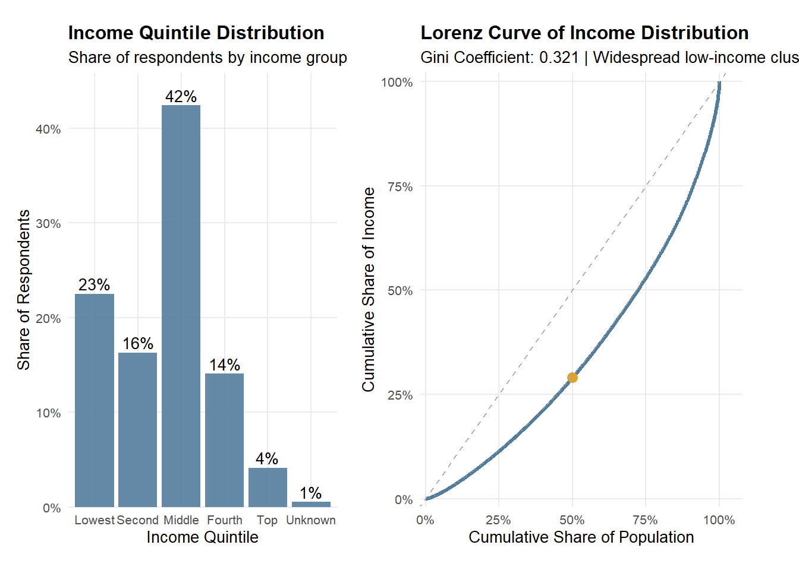
Observation
Income among rural informal labourers is concentrated in the lower-to-middle strata, yet the Lorenz curve shows that income accumulation remains uneven. Most respondents fall within the bottom and middle income quintiles, indicating that low-to-mid income conditions are widespread rather than limited to a small disadvantaged subgroup. However, the Lorenz curve deviates from the line of equality, implying that a relatively smaller share of higher earners holds a disproportionate share of total income. Together, these patterns suggest persistent inequality within an overall low-income population, reflecting structural constraints alongside unequal income capture at the upper tail.
2.2.1 Income Quintile Distribution
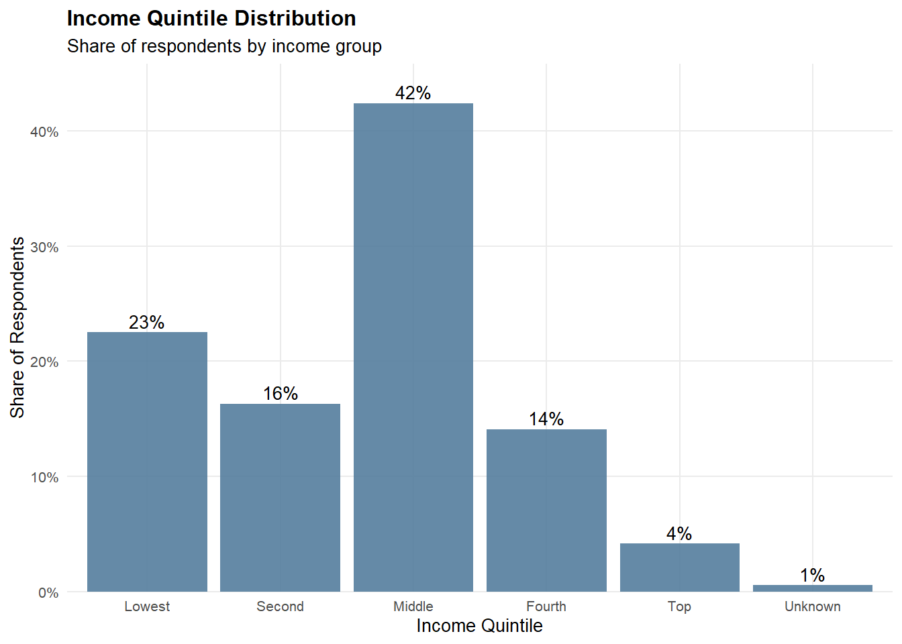
plot_data_22 <- clean_df %>%
count(income_group) %>%
mutate(percentage = n / sum(n))
p_quintile <- ggplot(plot_data_22, aes(x = income_group, y = percentage)) +
geom_col(fill = "#547d9d", alpha = 0.9) +
geom_text(
aes(label = scales::percent(percentage, accuracy = 1)),
vjust = -0.3,
size = 3.5
) +
scale_y_continuous(
labels = scales::percent_format(accuracy = 1),
expand = expansion(mult = c(0, 0.08))
) +
labs(
title = "Income Quintile Distribution",
subtitle = "Share of respondents by income group",
x = "Income Quintile",
y = "Share of Respondents"
) +
theme_minimal(base_size = 10) +
theme(
plot.title = element_text(face = "bold"),
panel.grid.minor = element_blank()
)
p_quintile2.2.2 Lorenz Curve of Income Distribution
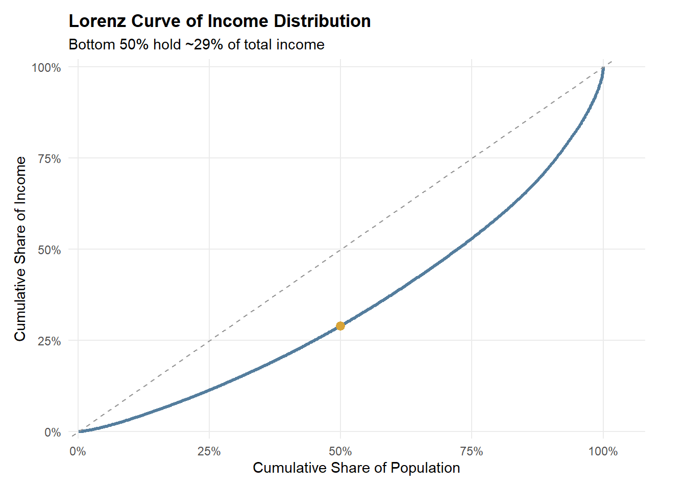
gini_val <- Gini(clean_df$total_income, na.rm = TRUE)
lorenz_df <- clean_df %>%
filter(!is.na(total_income), total_income >= 0) %>%
arrange(total_income) %>%
mutate(
cum_pop = row_number() / n(),
cum_income = cumsum(total_income) / sum(total_income)
)
lorenz_50 <- lorenz_df %>%
filter(cum_pop >= 0.5) %>%
slice(1)
p_lorenz <- ggplot(lorenz_df, aes(x = cum_pop, y = cum_income)) +
geom_line(color = "#547d9d", linewidth = 1.1) +
geom_abline(intercept = 0, slope = 1, linetype = "dashed", color = "grey60") +
geom_point(
data = lorenz_50,
aes(x = cum_pop, y = cum_income),
color = "#d8a437",
size = 2.8
) +
scale_x_continuous(labels = scales::percent_format(accuracy = 1), limits = c(0, 1)) +
scale_y_continuous(labels = scales::percent_format(accuracy = 1), limits = c(0, 1)) +
labs(
title = "Lorenz Curve of Income Distribution",
subtitle = paste0("Bottom 50% hold ~", scales::percent(lorenz_50$cum_income, accuracy = 1), " of total income"),
x = "Cumulative Share of Population",
y = "Cumulative Share of Income"
) +
theme_minimal(base_size = 10) +
theme(
plot.title = element_text(face = "bold"),
panel.grid.minor = element_blank()
)
p_lorenz <- p_lorenz +
labs(subtitle = paste0("Gini Coefficient: ", round(gini_val, 3),
" | Widespread low-income clustering in the 20-60 range"))
p_lorenz2.3 Structural Disparities

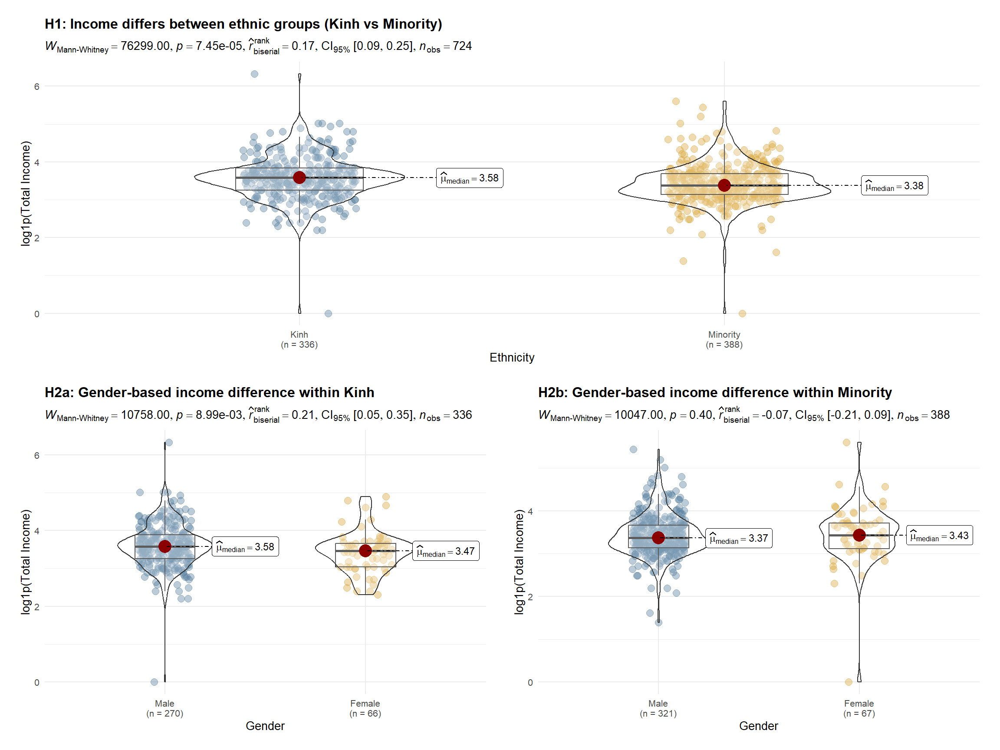
Note
Given the right-skewed distribution of income and the presence of extreme values, non-parametric Wilcoxon rank-sum tests were employed, and group differences are summarized using median values rather than means.
Because total income exhibits a highly right-skewed distribution with extreme values, a log transformation
log1pis applied prior to analysis. This transformation reduces the influence of outliers, stabilizes variance, and facilitates more meaningful comparisons of income distributions across groups while preserving zero-income observations.
Observation
Income distributions are concentrated below 100, with most observations clustered between 20 and 60. Clear ethnic disparities are evident: ethnic minority workers exhibit a lower median income and a left-shifted distribution compared with Kinh workers, suggesting systematic structural constraints rather than isolated low-income cases. Gender differences are not uniform across ethnic groups. Within the Kinh group, income differs significantly by gender, indicating persistent gender-based stratification. In contrast, among ethnic minorities, male and female income distributions largely overlap, with no significant difference, implying that broader ethnic disadvantages may dominate and attenuate gender effects. Overall, these findings suggest that ethnicity is the primary driver of income inequality, while gender-based disparities are conditional on ethnic context rather than universally observed.
2.3.1 Income Spread (Raincloud)
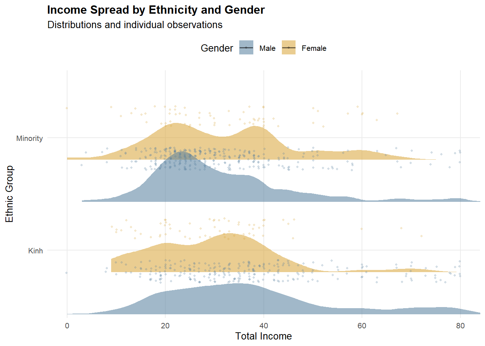
pal <- c("Male" = "#547d9d", "Female" = "#d8a437")
df_income <- clean_df %>%
filter(!is.na(total_income), total_income >= 0) %>%
mutate(
race = droplevels(race),
gender = droplevels(gender)
)
x_max <- as.numeric(quantile(df_income$total_income, 0.95, na.rm = TRUE))
p_rain_split <- ggplot(df_income, aes(x = total_income, y = race, fill = gender)) +
ggdist::stat_halfeye(
adjust = 0.65,
width = 0.55,
.width = 0,
alpha = 0.55,
point_colour = NA,
justification = 0.85,
position = position_dodge(width = 0.75)
) +
geom_point(
aes(color = gender),
position = position_jitterdodge(
jitter.height = 0.18,
dodge.width = 0.75,
seed = 2022
),
alpha = 0.22,
size = 0.75
) +
coord_cartesian(xlim = c(0, x_max)) +
scale_fill_manual(values = pal) +
scale_color_manual(values = pal) +
scale_x_continuous(labels = scales::comma) +
labs(
title = "Income Spread by Ethnicity and Gender",
subtitle = "Distribution shape + individual observations (trimmed to 95th percentile)",
x = "Total Income",
y = "Ethnic Group",
fill = "Gender"
) +
theme_minimal(base_size = 11) +
theme(
plot.title = element_text(face = "bold"),
panel.grid.minor = element_blank(),
legend.position = "top"
) +
guides(color = "none")
p_rain_split <- p_rain_split +
stat_compare_means(aes(group = gender),
method = "wilcox.test",
label = "p.signif",
label.x = 1.5)
p_rain_split
Note
To improve readability, the x-axis is trimmed to the 95th percentile using
coord_cartesian().This keeps the main distribution visible while preventing a small number of extreme incomes from stretching the scale.
2.3.2 Income Distribution (Boxplot)

p_box_23 <- ggplot(df_income, aes(x = race, y = total_income, fill = gender)) +
geom_boxplot(width = 0.6, outlier.alpha = 0.25) +
coord_cartesian(ylim = c(0, 150)) +
scale_fill_manual(values = pal) +
labs(
title = "Income Distribution (Boxplot)",
subtitle = "Median and IQR highlighted (zoomed to 0–150)",
x = "Ethnic Group",
y = "Total Income"
) +
theme_minimal(base_size = 11) +
theme(
plot.title = element_text(face = "bold"),
panel.grid.minor = element_blank(),
legend.position = "top"
)
p_box_23
Note
The y-axis is zoomed to 0–150 via
coord_cartesian()to highlight differences in the median and IQR.Outliers are still present in the dataset; they are only de-emphasized visually to avoid compressing the box region.
2.3.3 Within-Group Income Distribution (Density)

p_density_23 <- ggplot(df_income, aes(x = total_income, fill = gender)) +
geom_density(alpha = 0.55) +
facet_wrap(~ race, scales = "free_y") +
coord_cartesian(xlim = c(0, x_max)) +
scale_fill_manual(values = pal) +
labs(
title = "Within-Group Income Distribution",
subtitle = "Gender density within each ethnic group (trimmed to 95th percentile)",
x = "Total Income",
y = "Density"
) +
theme_minimal(base_size = 11) +
theme(
plot.title = element_text(face = "bold"),
panel.grid.minor = element_blank(),
legend.position = "top"
)
p_density_23
Note
Density plots are faceted by ethnicity with
scales = "free_y"so each group’s distribution shape is readable.The x-axis is trimmed to the 95th percentile, focusing attention on the dominant income range.
2.3.4 H1: Ethnicity difference (Kinh vs Minority)
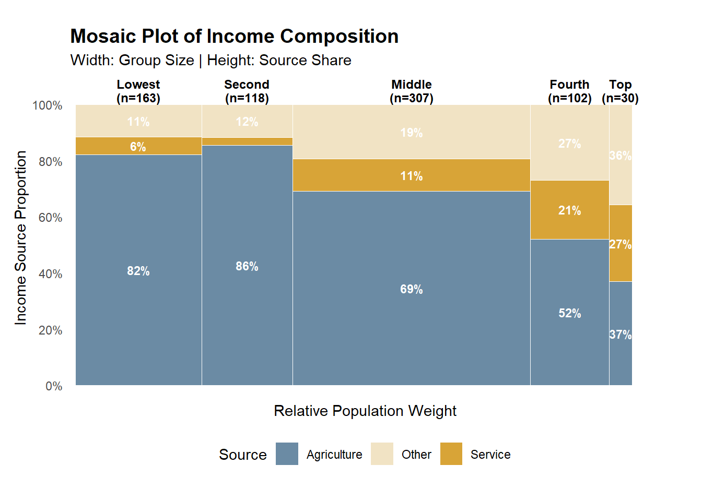
df_hypo <- clean_df %>%
filter(
race %in% c("Kinh", "Minority"),
gender %in% c("Male", "Female"),
!is.na(total_income),
total_income >= 0
) %>%
mutate(
race = droplevels(race),
gender = droplevels(gender),
log_income = log1p(total_income)
)
pal_race <- c("Kinh" = "#547d9d", "Minority" = "#d8a437")
base_theme <- theme_minimal(base_size = 10) +
theme(
plot.title = element_text(face = "bold", size = 12),
plot.subtitle = element_text(size = 9),
plot.margin = margin(12, 16, 12, 16)
)
p_h1 <- ggstatsplot::ggbetweenstats(
data = df_hypo,
x = race,
y = log_income,
type = "np",
pairwise.comparisons = FALSE,
results.subtitle = TRUE,
xlab = "Ethnicity",
ylab = "log1p(Total Income)",
title = "H1: Income differs between ethnic groups (Kinh vs Minority)",
ggtheme = base_theme
) +
scale_fill_manual(values = pal_race) +
scale_color_manual(values = pal_race)
p_h12.3.5 H2a: Gender difference within Kinh
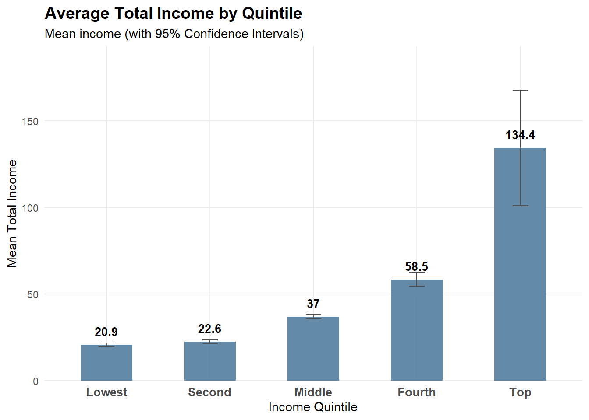
df_hypo <- clean_df %>%
filter(
race %in% c("Kinh", "Minority"),
gender %in% c("Male", "Female"),
!is.na(total_income),
total_income >= 0
) %>%
mutate(
race = droplevels(race),
gender = droplevels(gender),
log_income = log1p(total_income)
)
pal_gender <- c("Male" = "#547d9d", "Female" = "#d8a437")
base_theme <- theme_minimal(base_size = 10) +
theme(
plot.title = element_text(face = "bold", size = 12),
plot.subtitle = element_text(size = 9),
plot.margin = margin(12, 16, 12, 16),
legend.position = "top"
)
p_h2_kinh <- ggstatsplot::ggbetweenstats(
data = df_hypo %>% filter(race == "Kinh"),
x = gender,
y = log_income,
type = "np",
pairwise.comparisons = FALSE,
results.subtitle = TRUE,
xlab = "Gender",
ylab = "log1p(Total Income)",
title = "H2a: Gender-based income difference within Kinh",
ggtheme = base_theme
) +
scale_fill_manual(values = pal_gender) +
scale_color_manual(values = pal_gender)
p_h2_kinh2.3.6 H2b: Gender difference within Minority
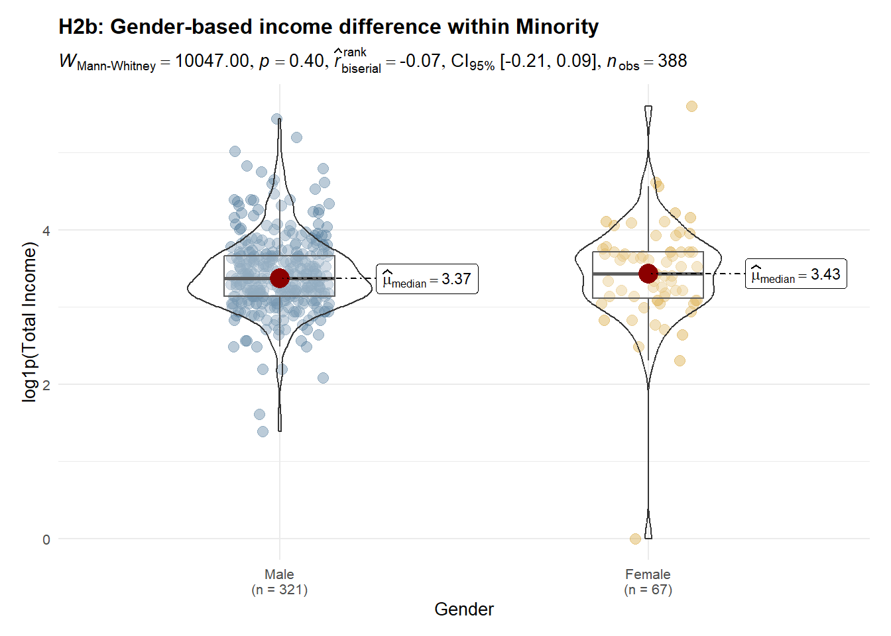
df_hypo <- clean_df %>%
filter(
race %in% c("Kinh", "Minority"),
gender %in% c("Male", "Female"),
!is.na(total_income),
total_income >= 0
) %>%
mutate(
race = droplevels(race),
gender = droplevels(gender),
log_income = log1p(total_income)
)
pal_gender <- c("Male" = "#547d9d", "Female" = "#d8a437")
base_theme <- theme_minimal(base_size = 10) +
theme(
plot.title = element_text(face = "bold", size = 12),
plot.subtitle = element_text(size = 9),
plot.margin = margin(12, 16, 12, 16),
legend.position = "top"
)
p_h2_minority <- ggstatsplot::ggbetweenstats(
data = df_hypo %>% filter(race == "Minority"),
x = gender,
y = log_income,
type = "np",
pairwise.comparisons = FALSE,
results.subtitle = TRUE,
xlab = "Gender",
ylab = "log1p(Total Income)",
title = "H2b: Gender-based income difference within Minority",
ggtheme = base_theme
) +
scale_fill_manual(values = pal_gender) +
scale_color_manual(values = pal_gender)
p_h2_minority2.4 Income Composition

Observation
While higher income quintiles mechanically exhibit higher average income, the key distinction lies in income composition. Lower quintiles depend predominantly on agricultural income, with limited diversification across income sources. As income levels rise, the share of service and other non-agricultural income increases substantially, alongside a marked rise in average total income. This pattern suggests that upward income mobility is associated with structural shifts in livelihood strategies, rather than proportional increases within the same income source.
2.4.1 Income Source Composition by Quintile
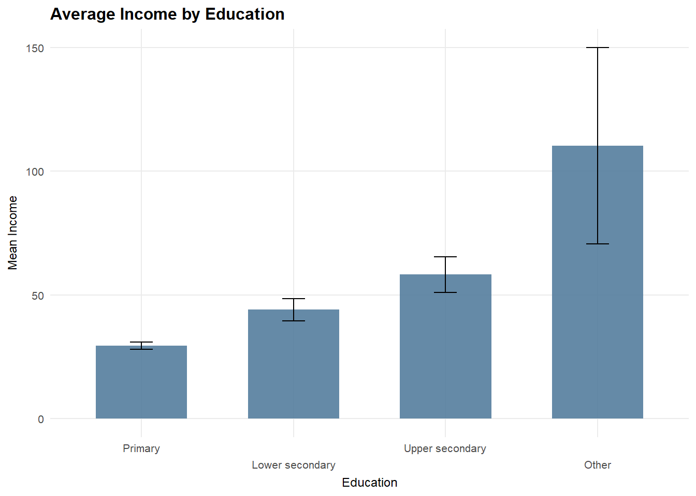
mosaic_df <- clean_df %>%
filter(!is.na(total_income), total_income > 0, income_group != "Unknown") %>%
mutate(income_group = factor(income_group,
levels = c("Lowest", "Second", "Middle", "Fourth", "Top"))) %>%
group_by(income_group) %>%
summarise(
n = n(),
Agriculture = mean(agri_inc_ratio, na.rm = TRUE),
Service = mean(service_inc_ratio, na.rm = TRUE),
Other = mean(other_inc_ratio, na.rm = TRUE),
.groups = "drop"
) %>%
mutate(
width = n / sum(n),
xmax = cumsum(width),
xmin = xmax - width,
xmid = (xmin + xmax) / 2
) %>%
pivot_longer(cols = c("Agriculture", "Service", "Other"),
names_to = "source", values_to = "share") %>%
group_by(income_group) %>%
mutate(
share = share / sum(share),
ymax = cumsum(share),
ymin = ymax - share,
ymid = (ymin + ymax) / 2
) %>%
ungroup()
ggplot(mosaic_df) +
geom_rect(aes(xmin = xmin, xmax = xmax, ymin = ymin, ymax = ymax, fill = source),
color = "white", linewidth = 0.3) +
geom_text(aes(x = xmid, y = ymid,
label = ifelse(share > 0.05, scales::percent(share, accuracy = 1), "")),
color = "white", size = 3, fontface = "bold") +
annotate("text",
x = mosaic_df$xmid[seq(1, nrow(mosaic_df), 3)],
y = 1.05,
label = paste0(levels(mosaic_df$income_group), "\n(n=", mosaic_df$n[seq(1, nrow(mosaic_df), 3)], ")"),
size = 3.2, fontface = "bold", lineheight = 0.9) +
scale_fill_manual(values = pal_src) +
scale_y_continuous(labels = scales::percent_format(), breaks = seq(0, 1, 0.2)) +
scale_x_continuous(expand = expansion(mult = c(0.01, 0.05))) +
labs(title = "Mosaic Plot of Income Composition",
subtitle = "Width: Group Size | Height: Source Share",
x = "Relative Population Weight",
y = "Income Source Proportion",
fill = "Source") +
theme_minimal() +
theme(
panel.grid = element_blank(),
axis.text.x = element_blank(),
plot.title = element_text(face = "bold", size = 14),
legend.position = "bottom",
plot.margin = margin(t = 20, r = 30, b = 20, l = 10)
)
Note
This figure uses a 100% stacked bar (each bar sums to 100%) to compare income structure across quintiles. Values are based on average income shares (ratios) rather than raw income levels, so the focus is on composition, not magnitude.
2.4.2 Average Total Income by Quintile

quintile_order <- c("Unknown", "Lowest", "Second", "Middle", "Fourth", "Top")
mean_df <- df_24 %>%
group_by(income_group) %>%
summarise(
mean_income = mean(total_income, na.rm = TRUE),
se = sd(total_income, na.rm = TRUE) / sqrt(n()),
.groups = "drop"
) %>%
mutate(
ci_low = mean_income - 1.96 * se,
ci_high = mean_income + 1.96 * se
)
p_mean <- ggplot(mean_df, aes(x = income_group, y = mean_income)) +
geom_col(fill = "#547d9d", width = 0.6, alpha = 0.9) +
geom_errorbar(aes(ymin = ci_low, ymax = ci_high), width = 0.2) +
scale_y_continuous(labels = scales::comma) +
labs(
title = "Average Total Income by Quintile",
subtitle = "Mean income with 95% confidence intervals",
x = "Income Quintile",
y = "Mean Total Income"
) +
theme_minimal(base_size = 11) +
theme(
plot.title = element_text(face = "bold"),
panel.grid.minor = element_blank()
)
p_mean
Note
Error bars show 95% confidence intervals of the mean, computed as mean ± 1.96 × SE. This chart complements the composition plot by showing income magnitude, addressing the limitation that “high share” does not necessarily imply “high income”.
2.5 Micro-Level Drivers of Income and Productivity
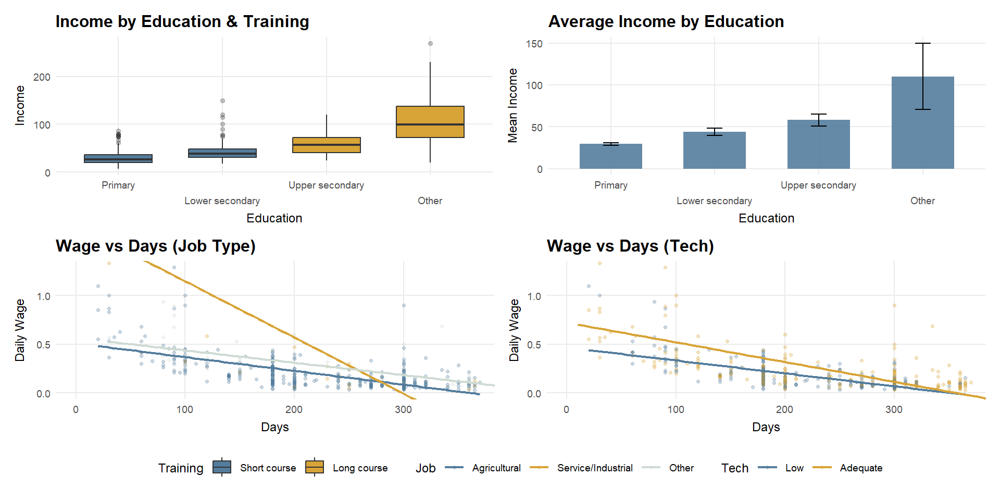
Note
Only four education–training combinations are observed due to strong sorting between education level and training type.
# A tibble: 4 × 4
# Groups: education [4]
education training_status n prop
<fct> <fct> <int> <dbl>
1 Primary Short course 356 1
2 Lower secondary Short course 93 1
3 Upper secondary Long course 39 1
4 Other Long course 13 1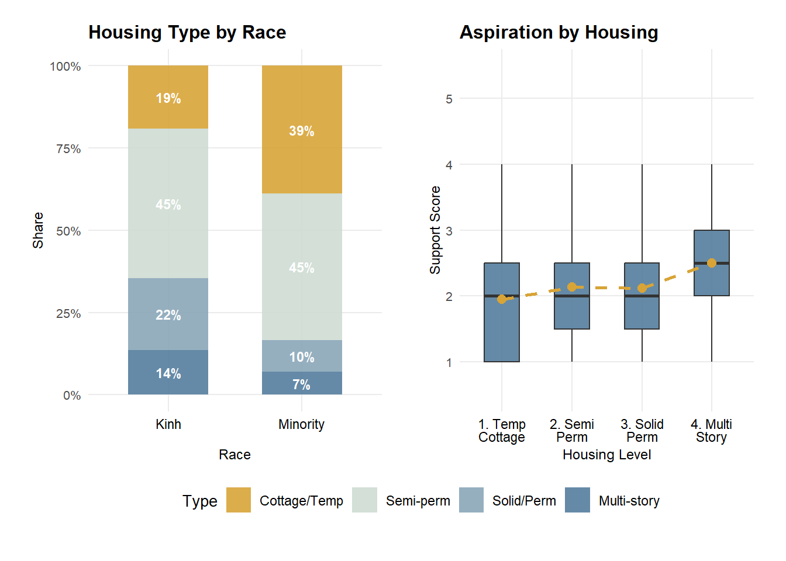
Observation
Income dispersion increases with education level and training intensity. Higher education groups, particularly those associated with long-course training, exhibit higher average income and greater dispersion, driven mainly by an expanded upper tail rather than uniform gains across workers.
Hypothesis testing clarifies the underlying mechanisms. Daily wages differ significantly across job types, with service and industrial employment offering higher productivity per day than agricultural work. Technology access alone does not produce a statistically significant difference in daily wages at the distributional level; however, regression results indicate a modest positive effect once job type and working days are controlled for. Overall, income heterogeneity is primarily driven by occupational sorting into higher-productivity jobs, with technology playing a secondary, conditional role.
2.5.1 Income by Education & Training (Boxplot)
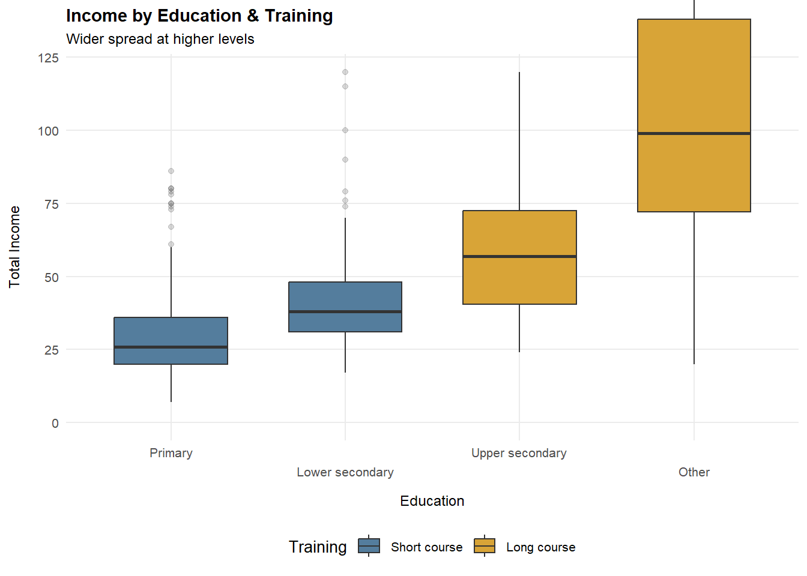
p_edu_train <- ggplot(df_25, aes(x = education, y = total_income, fill = training_status)) +
geom_boxplot(width = 0.65, outlier.alpha = 0.18) +
coord_cartesian(ylim = c(0, y99_inc), clip = "off") +
scale_x_discrete(guide = guide_axis(n.dodge = 2)) +
scale_fill_manual(values = pal_train) +
labs(
title = "Income by Education & Training",
subtitle = "Wider spread at higher levels",
x = "Education",
y = "Total Income",
fill = "Training"
) +
theme_25
p_edu_train2.5.2 Average Income by Education (Mean + 95% CI)

edu_mean <- df_25 %>%
group_by(education) %>%
summarise(
mean_income = mean(total_income, na.rm = TRUE),
se = sd(total_income, na.rm = TRUE) / sqrt(n()),
.groups = "drop"
) %>%
mutate(
ci_low = mean_income - 1.96 * se,
ci_high = mean_income + 1.96 * se
)
p_edu_ci <- ggplot(edu_mean, aes(x = education, y = mean_income)) +
geom_col(fill = "#547d9d", alpha = 0.9, width = 0.65) +
geom_errorbar(aes(ymin = ci_low, ymax = ci_high), width = 0.2) +
coord_cartesian(clip = "off") +
scale_x_discrete(guide = guide_axis(n.dodge = 2)) +
scale_y_continuous(labels = scales::comma) +
labs(
title = "Average Income by Education",
subtitle = "Mean (95% CI)",
x = "Education",
y = "Mean Income"
) +
theme_25
p_edu_ci2.5.3 Daily Wage vs Working Days (Job Type)

p_job <- ggplot(df_25, aes(x = working_days, y = daily_wage, color = job_type)) +
geom_point(alpha = 0.8, size = 1.4) +
geom_smooth(method = "lm", se = FALSE, linewidth = 0.85) +
coord_cartesian(xlim = c(0, x99_days), ylim = c(0, y99_wage), clip = "off") +
scale_x_continuous(breaks = scales::breaks_pretty(n = 5)) +
scale_color_manual(values = pal_job) +
labs(
title = "Daily Wage vs Working Days",
subtitle = "Higher wage in non-farm jobs",
x = "Working Days",
y = "Daily Wage",
color = "Job"
) +
theme_25
p_job2.5.4 Daily Wage vs Working Days (Technology)

p_tech <- ggplot(df_25, aes(x = working_days, y = daily_wage, color = tech_level)) +
geom_point(alpha = 0.8, size = 1.4) +
geom_smooth(method = "lm", se = FALSE, linewidth = 0.85) +
coord_cartesian(xlim = c(0, x99_days), ylim = c(0, y99_wage), clip = "off") +
scale_x_continuous(breaks = scales::breaks_pretty(n = 5)) +
scale_color_manual(values = pal_tech) +
labs(
title = "Daily Wage vs Working Days",
subtitle = "Tech lifts wage per day",
x = "Working Days",
y = "Daily Wage",
color = "Tech"
) +
theme_25
p_tech2.5.5 H1 : Daily wage differs across job types
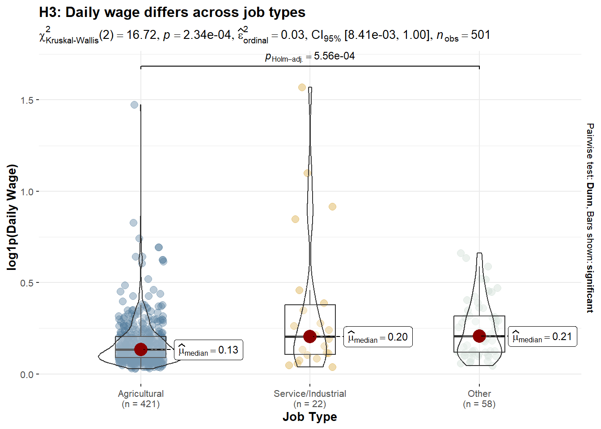
df_h3 <- df_25 %>%
filter(
!is.na(daily_wage), daily_wage > 0,
job_type %in% c("Agricultural", "Service/Industrial", "Other")
) %>%
mutate(
job_type = droplevels(job_type),
log_wage = log1p(daily_wage)
)
p_h3_job <- ggstatsplot::ggbetweenstats(
data = df_h3,
x = job_type,
y = log_wage,
type = "np",
pairwise.comparisons = TRUE,
pairwise.display = "significant",
p.adjust.method = "holm",
xlab = "Job Type",
ylab = "log1p(Daily Wage)",
title = "H3: Daily wage differs across job types",
subtitle = "Kruskal–Wallis test with Dunn post-hoc (Holm-adjusted)"
) +
scale_fill_manual(values = pal_job) +
scale_color_manual(values = pal_job)
p_h3_job2.5.6 H2 : Daily wage differs by technology access
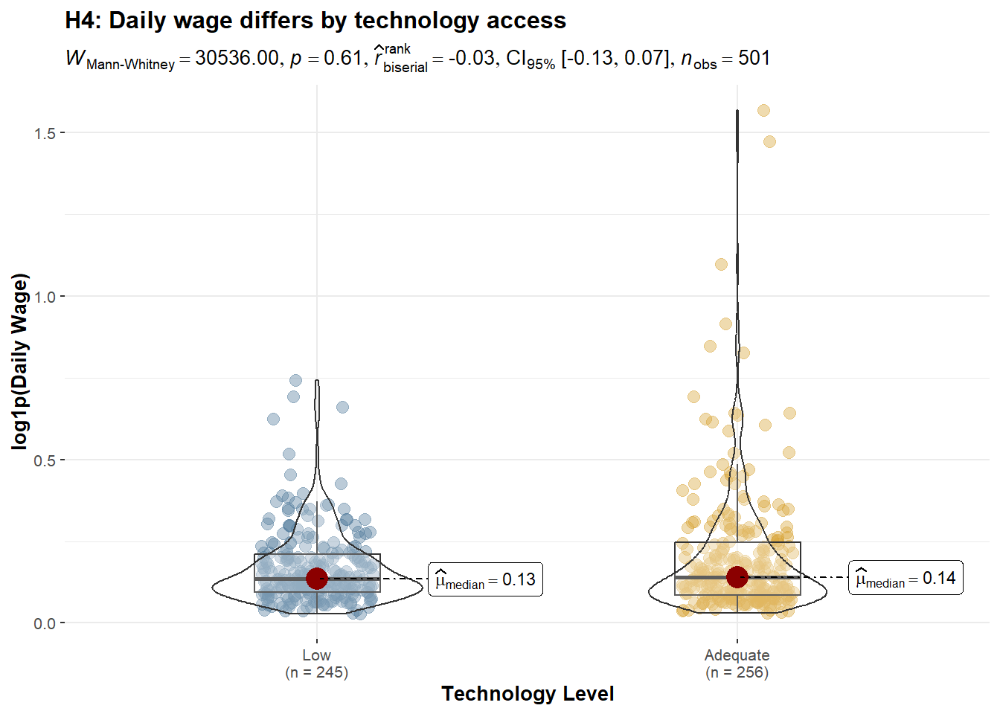
df_h4 <- df_25 %>%
filter(
!is.na(daily_wage), daily_wage > 0,
tech_level %in% c("Low", "Adequate")
) %>%
mutate(
tech_level = droplevels(tech_level),
log_wage = log1p(daily_wage)
)
p_h4_tech <- ggstatsplot::ggbetweenstats(
data = df_h4,
x = tech_level,
y = log_wage,
type = "np",
pairwise.comparisons = FALSE,
xlab = "Technology Level",
ylab = "log1p(Daily Wage)",
title = "H4: Daily wage differs by technology access",
subtitle = "Wilcoxon rank-sum test (non-parametric)"
)+
scale_fill_manual(values = pal_tech) +
scale_color_manual(values = pal_tech)
p_h4_tech2.5.7 H3 : Conditional Effects on Daily Wage

library(broom)
df_h5 <- df_25 %>%
filter(
!is.na(daily_wage), daily_wage > 0,
!is.na(working_days), working_days > 0,
job_type %in% c("Agricultural", "Service/Industrial", "Other"),
tech_level %in% c("Low", "Adequate")
) %>%
mutate(
log_wage = log1p(daily_wage),
job_type = droplevels(job_type),
tech_level = droplevels(tech_level)
)
model_h5 <- lm(
log_wage ~ job_type + tech_level + working_days,
data = df_h5
)
coef_df <- broom::tidy(model_h5, conf.int = TRUE) %>%
filter(term != "(Intercept)") %>%
mutate(
term = recode(term,
"job_typeService/Industrial" = "Service / Industrial job",
"job_typeOther" = "Other job",
"tech_levelAdequate" = "Adequate technology",
"working_days" = "Working days"
)
)
h3 <- ggplot(coef_df, aes(x = estimate, y = reorder(term, estimate))) +
geom_vline(xintercept = 0, linetype = "dashed", color = "grey60") +
geom_point(size = 3, color = "#547d9d") +
geom_errorbarh(
aes(xmin = conf.low, xmax = conf.high),
height = 0.2
) +
labs(
title = "Estimated Effects on Daily Wage (log scale)",
subtitle = "OLS regression controlling for job type, technology, and working days",
x = "Coefficient estimate (log points)",
y = NULL
) +
theme_minimal(base_size = 11)3 Synthesis & Conclusion
Based on the progressive visual analytics conducted in this report, we draw the following integrated conclusions regarding income inequality and social outlook among rural informal labourers in Northern Vietnam:
3.1 Key Findings
The Ethnicity-Income Trap: There is a profound structural gap where Ethnic Minorities are not only geographically remote but also trapped in low-productivity agricultural roles with significantly lower median incomes compared to the Kinh majority.
Education as a Double-Edged Sword: While higher education and long-term vocational training significantly lift the “income ceiling,” they also increase income dispersion. This suggests that education provides the opportunity for high earnings, but the actual returns depend on other factors like technology access and job type.
The Diminishing Returns of Labor: Our analysis reveals that working more days does not linearly increase daily wages; in fact, labor intensity often shows diminishing returns. True economic mobility is driven by technological adequacy and transitioning from agriculture to service/industrial sectors.
The “Aspiration Awakening”: Perhaps the most critical insight is that policy support is not a simple function of poverty. Instead, as labourers improve their material living standards (housing), their desire for structural transition (urban jobs and training) intensifies. Stability breeds ambition.
3.2 Strategic Recommendations
Targeted Skill Transformation: Vocational training should be specifically tailored to the “awakened” group (those with basic stability) to maximize transition success, while basic social safety nets should remain the priority for those in temporary housing.
Bridging the Tech-Gap: Since technology access significantly lifts the wage curve regardless of working days, subsidized access to digital tools and modern equipment could be a more efficient poverty reduction tool than direct cash transfers.
Regional Integration: Policy focus should shift from “keeping labourers on the farm” to facilitating a smooth transition into urban and industrial value chains, as this is where the highest productivity gains are observed.
3.3 Limitations and Future Extensions
This study is subject to several limitations that should be acknowledged when interpreting the results.
The analysis is based on cross-sectional survey data, which constrains causal inference. While strong associations are observed between job type, technology access, and daily wage productivity, the direction of causality cannot be definitively established. For example, higher wages may enable access to better technology, rather than technology directly causing wage increases. Longitudinal or panel data would be required to distinguish productivity effects from selection effects.
Income and working days are self-reported measures and may be affected by recall bias or reporting error, particularly in informal labour settings where earnings fluctuate seasonally. Although non-parametric methods and log transformations mitigate the influence of extreme values, measurement noise may still attenuate estimated relationships.
The education–training dimension exhibits strong sorting, resulting in only four observed education–training combinations rather than a full factorial structure. This reflects real-world constraints in vocational access rather than a data-processing issue, but it limits the ability to separately identify interaction effects between education level and training intensity.
The findings are context-specific to rural informal labourers in Northern Vietnam and should not be mechanically generalized to urban workers or other developing regions without accounting for institutional and labour market differences.
2.6 Social Outlook: Material Reality and Policy Aspiration
Construction of aspiration index
The aspiration score is constructed using only two policy items—urban job opportunities and vocational training—which directly reflect forward-looking economic transition and mobility. Other policy items (e.g. healthcare, elderly care) relate primarily to social protection rather than aspirational change, and are therefore excluded to maintain conceptual clarity.
Observation
This section reveals a clear divergence between material deprivation and policy aspiration. Ethnic minorities are disproportionately concentrated in lower-quality housing, indicating weaker material living conditions. However, support for transition-oriented policies increases with housing quality, rather than deprivation severity. Importantly, the aspiration index focuses exclusively on urban job opportunities and vocational training, capturing forward-looking economic mobility rather than general welfare demand. Individuals with more secure housing conditions appear better positioned—financially and psychologically—to perceive these policies as viable pathways for further advancement. In contrast, those in precarious housing face binding constraints that limit optimism toward long-term transition policies, despite greater material need.
Together, these patterns suggest that policy aspiration reflects perceived capacity to benefit, not merely exposure to hardship. Structural inequality thus operates not only through unequal living conditions, but also through unequal access to hope and future-oriented expectations—linking material reality to aspirational asymmetry.
2.6.1 Housing Modernization by Ethnic Group
2.6.2 Policy Aspiration by Housing Level